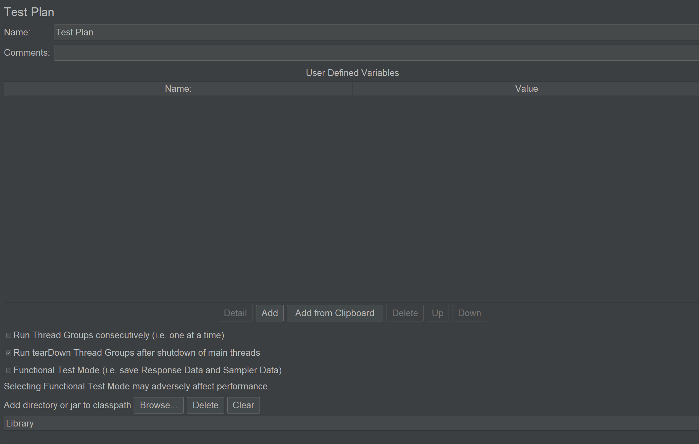
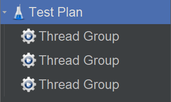
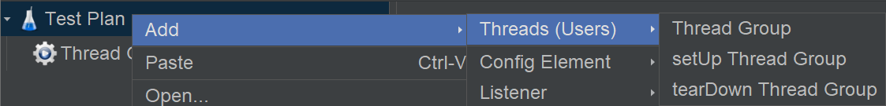

测试计划（Test Plan），是 JMeter 目录树的初始根节点，它的编辑区如下：

Name
带有业务含义的名字。
Comments
备注。
User Defined Variables
用户自定义变量，实际上就是全局变量。
表格共两列，第一列是 Name 变量名，第二列是 Value 变量值。表格下方的功能按钮，用来对表格进行增删改查和上下移动，还能直接从剪贴板添加。定义好的变量通过${}格式来使用，比如变量 a 值为 1，使用时写作${a}。
这个地方定义的实际上是字符串常量，比如刚才已经定义了一个变量名 a 变量值 1，再定义变量名 b 变量值${a} + 1，b 的实际值不是整型 2 而是字符串"${a} + 1"！
Run Thread Groups consecutively
控制多个线程组是顺序执行或并行执行，比如：

如果勾选了这个选项，顺序执行：前一个线程组执行完以后，再执行下一个线程组。
如果不勾选这个选项，并行执行：执行没有先后顺序，结果是随机的。
Run tearDown Thread Groups after shutdown of main threads
线程组包括初始化线程组和清理线程组：

这个选项默认已勾选，会执行清理线程组。
Funtional Test Mode
没用，不学。
Add directory or jar to classpath
要搞懂这个，得先学习 Java 中的 classpath 和 jar 包。Java 源文件是.java文件，编译后是.class文件。Java 的执行器 JVM（Java 虚拟机），只能执行.class文件。为了让 JVM 找到那个想要的.class文件，需要把.class文件路径添加到 classpath 中。为了方便管理，会把多个.class文件打成一个包，变成一个.jar文件，叫做 jar 包。
JMeter 是用 Java 写的，可以添加 jar 包扩展功能，添加入口有 2 个：
- 第一个入口是测试计划此选项，Add directory or jar to classpath。
- 推荐！第二个入口是把 jar 包放入
lib/ext目录。
小结
JMeter 测试计划是根节点，适合定义全局变量和设定全局配置，编辑区的选项也体现了这一特点。
参考资料：
https://www.liaoxuefeng.com/wiki/1252599548343744/1260466914339296